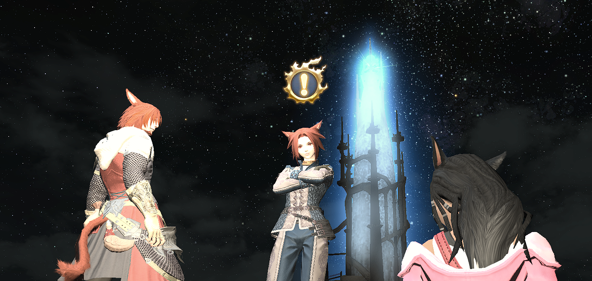

☀☀☀☀☀☀☀☀☀☀☀☀☀☀☀☀☀☀☀☀☀☀☀☀☀☀☀☀☀☀☀☀☀☀☀☀☀☀☀☀☀☀☀☀☀☀☀☀☀☀☀☀☀☀
What do I want out of life? What are my end goals? How far away from achieving my dreams am I? These are questions we should all probably mull over often. When I think about life, existing, I don't like to imagine myself simply allowing time to slip past me. To just idly waste away, knowing that I never even attempted to live up to all the potential I possess. And Allah has blessed with a lot of it. Masha Allah. To the point where I tend to excel at just about everything I set my mind to. Because I've been granted this gift, among many others, I see myself as someone who doesn't have any excuse to not become as overwhelmingly powerful as I possibly can. Being born with talents and abilities that few others may have puts you in a position where you either cement your legacy as a worthwhile human being or you instead allow yourself to become complacent, without ever giving yourself the opportunity to experience all that you could've been. Going about the motions, letting precious time waste away without even having figured out what I want to do with myself isn't a state I ever enjoy being in. That feeling of hopelessness, not having anything to excite you when you wake up and just being lost is not *living* to me. So I prefer to choose the former way of existing, I want to use what I've been given to make myself even more remarkable than I already am. That's not the only reason I wish to do that, however. As I said, I've had many favors bestowed upon me and those include having a decent amount of material wealth/passive income. In other words, I don't necessarily need to make much of an effort currently to enjoy most of the pleasures I seek from life.
☀☀☀☀☀☀☀☀☀☀☀☀☀☀☀☀☀☀☀☀☀☀☀☀☀☀☀☀☀☀☀☀☀☀☀☀☀☀☀☀☀☀☀☀☀☀☀☀☀☀☀☀☀☀
So why do I really willingly put myself through hardship, in spite of it not being an immediate requirement? To answer this question, I'll go back to something I've previously stated an obnoxious number of times. As a man, I attain satisfaction, fulfillment from giving back to the ones I love and to those who are there for me when I need them. To me, giving back involves becoming the best version of me, both for them and for myself. My father used to say, "What you are is a gift from God. What you make of it is a gift to God". I love Allah the most so ideally, if I do enhance myself, it should be for Him more than anyone. My brother has told me that when he's questioned on the day of judgement about what he has brought with him, he plans to put me on display as his most tremendous success since he views and treats me as his personal project. This, to me, is a great honor, of course. And more recently, another person quite dear to me mentioned that they want me to succeed at everything. I intend to live up to those expectations as well as other positive ones that people have had of me cause what better way is there to show my appreciation and love for all the names I brought up than to simply strive to get to the highest level of power I can hope to reach and then provide the choicest value I can to each and every one of them. If I do have kids someday which, Insha Allah, I will, I would most certainly like to instill similar values in them. I suppose becoming capable of supporting and taking care of a family of my own, without needing to rely on my parents' wealth for it is a goal for me too. I'd like to be able to satiate all of my wife and kids' wants and requirements; financial, emotional or otherwise. That and I want to bring about change in this world, overly idealistic as that may sound, by helping those in need (starting with the ones closest to me), relentlessly and unwaveringly taking a stand against wickedness and tyranny, once I have accumulated enough strength and ultimately, dedicating myself fully to living and dying in Allah's Cause. That is my greatest mission in life and although it doesn't mean I have to neglect my family and friends at that point, it does mean that I can not make them more of a priority than what I believe I was sent here for; what my paramount goal is.
☀☀☀☀☀☀☀☀☀☀☀☀☀☀☀☀☀☀☀☀☀☀☀☀☀☀☀☀☀☀☀☀☀☀☀☀☀☀☀☀☀☀☀☀☀☀☀☀☀☀☀☀☀☀
Now then, here's where I want to get into all of you and the way I see this group as well as why I tend to treat you three with as much regard as I do. Firstly, let me start this part off by saying that I'm a firm believer in the idea that nothing in this universe was made purposeless or that we just happen to exist based on chance. Considering how intricately designed the universe and everything in it appears to be, including all the systems functioning consistently both within and outside of our anatomies as well as having some understanding now of how much finesse and thought goes into making something that's far less complicated by comparison, like a discord bot, the theory that the cosmos we live in one day upped and decided to materialize on its own just doesn't make sense to me. No program is capable of writing itself, after all. What's the point of me bringing that up? Well, according to my views, all that I just referenced is clear evidence of an Entity of Far Higher Intellect shaping and maintaining our reality and I don't think that this Being creates anything without reason. Now, here's the thing, I believe that this Being has written all of our tales already. Basically, what we're doing is that we're just living out what's already been set in stone millenia ago and the only One who has the power to alter our destinies at this stage is Allah Himself, since He is not bound by what He has inscribed. We are. My point is the formation of this group and all of us aiding each other in personal growth, I think it was predestined, preordained and I say Alhamdulillah that it was. Humanity has, from the beginning of history, always prospered the most as a community, it's part of how we became the most dominant species in the world despite lacking the strength, tenacity and agility that our competitors possess and we have accomplished so many great things via collaboration that individuals who choose to work solo could only dream of. Not every team that one becomes a part of is destined for success though. I should know this. Perhaps better than all of you since my previous career path heavily relied on being in a team and it's no exaggeration when I tell you that just about every team I was ever a member of had one issue or another. If the team had players that were decent (the reason I say decent is cause when it came to dota, I didn't require much. I just wanted players who had some clue of what they were doing since I could very much destroy entire stacks with minimal help from those on my side but believe it or not, even that was too much to ask for from most of my supposed teammates), they either didn't have the same lofty dreams me and my brother did or they just had unbearable attitudes. If they weren't the best at their jobs and we still gave them a shot, hoping against hope that they would improve over time, they'd just become lazily reliant and proceed to never even actually strive to work on their own game.
☀☀☀☀☀☀☀☀☀☀☀☀☀☀☀☀☀☀☀☀☀☀☀☀☀☀☀☀☀☀☀☀☀☀☀☀☀☀☀☀☀☀☀☀☀☀☀☀☀☀☀☀☀☀
It is probably because of my experiences with the teammates I've had in my past that I appreciate you all as much as I do. As I've mentioned before, I've wanted friends like you my whole life. Friends who are there for each other and eager to assist one another in self development and personal growth. Friends who push each other to succeed, both via their encouraging words, the way they conduct themselves during meetings, as well as their actions outside of when we directly interact. Friends who seem to actually know the meaning of friendship. When I think about you guys, I'm reminded of Team Khabib from MMA, oddly enough. While the bond we all share with each other is still arguably in a state of infancy, the way we all seem to motivate, inspire and drive each other towards greatness reminds me of how those guys have done the same for their literal comrades in arms their whole lives and today, a huge portion of them have tasted championship gold. They've made a name for themselves and established dynasties that will be remembered for at least a century. Insha Allah. Forgive me if my aspirations come off a bit audacious but I like to imagine that via training with you lot, I might be able to achieve similar greatness in life. That all of us will continue to flourish and thrive alongside each other for as long as we're together. At least that, along with this dream that what we all have will continue to last for eternity are things that I hope for.

☀☀☀☀☀☀☀☀☀☀☀☀☀☀☀☀☀☀☀☀☀☀☀☀☀☀☀☀☀☀☀☀☀☀☀☀☀☀☀☀☀☀☀☀☀☀☀☀☀☀☀☀☀☀
In any case, I'm well aware that this has been quite the lengthy read and if you've gotten this far then I must commend you for bearing with me this whole time and I will try not to make the rest of my stories/essays/myths this long winded but here's what I'd like to begin winding it up with, I am grateful to every single one of you for having me here. I know at this point it probably comes off as a redundant statement since I've said it a bunch of times before. Plus, I kinda belong here now. It's not like I'm still a new recruit. But I am thankful either way. Each and every one of you possess qualities that inspire me to do better. Kat with her persistent attitude which pushes me to go into hyperdrive mode to try and outdo her. Grey with his ability to, for the most part, get us back on track when we seem to be getting derailed from topics of significance and his typical no nonsense frame of mind leads to me wanting to be more attentive and focused during study sessions myself. As for Rasp, Rasp doesn't inspire me at all! Who is this Rasp? Never heard of her. I'm kidding. If anything, she drives and motivates me to succeed the most out of all of you. Her radiant aura, her incredible personality, her remarkable leadership, her beauty, her knowledge, her power, her command or rather g*rasp* over what she's teaching us, how she carries herself like no other woman I've ever met can and the way in which she both encourages all of us and challenges me, in particular, almost constantly to do better which, imo, has most certainly prevented me from allowing myself to stagnate or become complacent when it comes to my transformation (so clearly, her *methods* tend to work); as well as the fact that she brought us all together in the first place, among many, many other astonishing characteristics of hers make her stand out both as an individual and as a woman in my eyes. She is, without a doubt, an exceptional human being and I don't think any of us would disagree with that assessment.
☀☀☀☀☀☀☀☀☀☀☀☀☀☀☀☀☀☀☀☀☀☀☀☀☀☀☀☀☀☀☀☀☀☀☀☀☀☀☀☀☀☀☀☀☀☀☀☀☀☀☀☀☀☀
Either way, this is where I'm going to end my excerpt. It turned out to be much longer than I'd intended, but I hope you all enjoyed what I made for you. Thank you for your patience, your time and your friendship. I, for one, am excited to see how our story goes because being on this journey with you guys, it is one of the most worthwhile things in life that I have ever had the pleasure of experiencing.